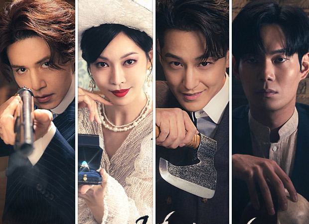
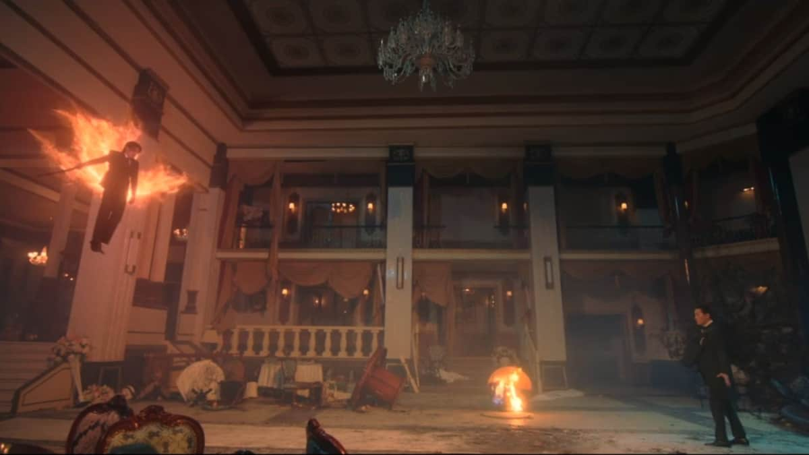
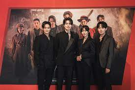

Genre
Action, Fantasy
Number of episodes
12
About
Tale of the Nine Tailed 1938 (Korean: 구미호뎐 1938) is a 2023 South Korean television series starring Lee Dong-wook, Kim So-yeon, Kim Bum, and Ryu Kyung-soo. The series serves as the second season to the 2020 series Tale of the Nine Tailed with storyline that prequel the former. It aired from May 6 to June 11, 2023 on tvN's Saturdays and Sundays at 21:20 (KST) time slot. It is also available for streaming on TVING in South Korea and Amazon Prime Video in selected regions.
When Tale of the Nine Tailed dropped back in 2020, many people agreed that it struggled to stand out, armed with a lackluster romance and a dour, stoic tone that didn’t fit the lofty, epic fantasy expectations this one set for itself. As a result, it petered out into disappointing mediocrity. Fast forward to 2023 and Tale of the Nine Tailed is back. Many people doubted the decision to renew this one (including yours truly) but like a phoenix rising from the ashes of disappointment, Nine Tailed 1938 is exactly what the first season aspired to be – and so much more.
Tale of the Nine Tailed 1938 tells the story where Lee Yeon (Lee Dong-wook) was dragged back in time to the year 1938, during the Japanese Occupation of Korea unexpectedly due to certain events that happened after Tale of the Nine Tailed where he met Lee Rang (Kim Bum) and Ryu Hong-joo (Kim So-yeon) of that era.
Summary
Lee Yeon gets involved in an unexpected case that leads him to travel back in time to the year 1938. There, Lee Yeon meets Ryu Hong Joo again. She was once a guardian spirit of a mountain in the west, but in 1938 she became the owner of the best high-end restaurant Myoyeongak in the capital city of Gyeongseong. When Ryu Hong Joo met Lee Yeon for the first time, she was fascinated by him, but she couldn't have him. Now, she meets him again, and she feels excited. Lee Yeon also meets his younger brother Lee Rang.
Meanwhile, Cheon Moo Young used to be a guardian spirit of a mountain in the east, and he used to be friends with Lee Yeon and Ryu Hong Joo. A case led Cheon Moo Young to become hostile towards him. Lee Yeon struggles to go back to the present day, where his loved one lives.
The second season unfolds with Lee Yeon and his returning assistant, Shin-joo, thrust back into the thick of drama, jumping back to 1938 and becoming embroiled in the politics and fantasy of the era. Hong-joo is here too, and she’s every bit as troublesome and tricksy as she was before. She’s now the owner of the best high-end restaurant, Myoyeongak, situated in the capital city of Gyeongseong. Rang is here too, but he’s dead-set on killing our Yeon, unaware that the 1938 version of our mountain god is still high on opium and out of commission.
What ensues from here is a blend of long-form and episodic storytelling. The former comes in the form of Japanese officials in town, with the evil Kato and his band of cronies working on his side. There’s also a subplot about a rebellion that intertwines into this, and another that involves Rang working to patch up his differences with Yeon.
Cast + Characters
- Lee Dong-wook as Lee Yeon
The titular gumiho (nine-tailed fox), who is a former mountain spirit and guardian of Baekdudaegan. He had a happy ending with his eternal first love Nam Ji-ah, but was recalled to 1938 as he got caught up in an unexpected incident. - Kim So-yeon as Ryu Hong-joo
Former western mountain god who is currently the owner of Myoyeongak, a top-notch restaurant in Gyeongseong. She gets entangled with Lee Yeon, who she confessed to a long time ago but was rejected. - Kim Bum as Lee Rang
A half-blood gumiho and Lee Yeon's younger brother, who had feelings of love and hatred for his older brother. - Ryu Kyung-soo as Cheon Moo-young
Former northern mountain god who saves even the dead. He is a longtime friend of Lee Yeon and Hong-joo. He stole the 'Samdocheon Guardian Stone' and fled to the past.
Review
The episodic storytelling follows the same sort of format as season 1, with a variety of different spirits and demons springing forth to test their power against Yeon and his group. There’s an almost anime-like feel to some of these confrontations, especially late on when a group called the Shinigami Mercenaries enter the fold.
With no focus on the romance between Ji-ah and Yeon this time, Tale of the Nine Tailed feels far stronger and streamlined, instead turning its attention on the brotherly love between Rang and Yeon, with Hong-joo and how she slots into all of this another stand out element too.
The show does a great job with its character development overall though, with the added additions of characters like Moo-yeong, Kato, Hong-joo and newcomer Yeo-hee, really helping to give this ensemble some much-needed depth and intrigue.